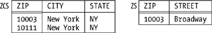

|
|
< Day Day Up > |
|
Two Cheers for NormalizationNormalization is far from being a panacea, as we can easily see by considering what its goals are and how well it measures up against them. Here are those goals:
I'll consider each in turn. Good representation of the real world: Normalization does well on this one. I have no criticisms here. Reduce redundancy: Normalization is a good start on this problem, but it's only a start. For one thing, it's a process of nonloss decomposition, and (as we've seen) not all redundancies can be removed by nonloss decomposition; indeed, there are some kinds of redundancy, not discussed in this chapter so far, that normalization simply doesn't address at all. For another thing, the objective of reducing redundancy can conflict with another objective, also not previously discussed—namely, the objective of dependency preservation. Let me explain. Consider the following relvar (attribute ZIP denotes ZIP Code or postcode):
ADDR { STREET, CITY, STATE, ZIP }
Assume for the sake of the example that this relvar satisfies the following FDs:
{ STREET, CITY, STATE } The second of these FDs implies that the relvar isn't in BCNF. But if we apply Heath's theorem and decompose it into BCNF projections as follows:
ZCS { ZIP, CITY, STATE }
KEY { ZIP }
ZS { ZIP, STREET }
KEY { ZIP, STREET }
then the FD {STREET,CITY,STATE} Figure 7-6. Projections ZCS and ZS—sample valuesAvoid update anomalies: This point is effectively just the previous one ("reduce redundancy") by another name. It's well known that less than fully normalized designs can be subject to certain update anomalies, precisely because of the redundancies they entail. In relvar STP, for example (see Figure 7-1 once again), supplier S1 might be shown as having status 20 in one tuple and status 25 in another. (Of course, this "update anomaly" can arise only if a less than perfect job is being done on integrity. Perhaps a better way to characterize the update anomaly issue is this: The constraints needed to prevent such anomalies are easier to state, and might be easier to enforce, if the design is fully normalized than they would be if it isn't. See the next paragraph.) Simplify statement and enforcement of constraints: It's clear as a general observation that some constraints imply others. As a trivial example, if quantities must be less than or equal to 5000, they must certainly be less than or equal to 6000 (speaking a little loosely). Now, if constraint A implies constraint B, then stating and enforcing A will effectively state and enforce B "automatically" (indeed, B won't actually need to be stated at all). And normalization to 5NF gives a very simple way of stating and enforcing certain important constraints: basically, all we have to do is define keys and enforce their uniqueness—which we're going to do anyway—and then all JDs (and all MVDs and all FDs) will effectively be stated and enforced automatically, because they'll all be implied by those keys. So normalization does a pretty good job in this area, too. On the other hand . . . here are some more reasons why normalization is no panacea. First, JDs aren't the only kind of constraint, and normalization doesn't help with any others. Second, given a particular set of relvars, there'll often be several possible decompositions into 5NF projections, and there's little or no formal guidance available to tell us which one to choose in such cases. Third, there are many design issues that normalization simply doesn't address at all. For example, what is it that tells us there should be just one suppliers relvar instead of one for London suppliers, one for Paris suppliers, and so on? It certainly isn't normalization as classically understood. That said, I must make it clear that I don't want my comments in this section to be seen as an attack. I believe firmly that anything less than a fully normalized design is strongly contraindicated. In fact, I want to close this section with an argument—a logical argument, and one you might not have seen before—in support of the position that you should "denormalize" only as a last resort. That is, you should back off from a fully normalized design only if all other strategies for improving performance have somehow failed to meet requirements. By the way, note that I'm going along here with the usual assumption that normalization has performance implications. So it does, in current SQL products; but this is another topic I want to come back to later (see the section "Some Remarks on Physical Design"). Anyway, here's the argument. We all know that denormalization is bad for update (logically bad, I mean; it makes updates harder to formulate, and it can jeopardize the integrity of the database as well). What doesn't seem to be so widely known is that denormalization can be bad for retrieval too; that is, it can make certain queries harder to formulate (equivalently, it can make them easier to formulate incorrectly—meaning, if they run, that you're getting answers that might be "correct" in themselves but are answers to the wrong questions). Let me illustrate. Take another look at relvar RS (Figure 7-2), with its FD {CITY} 1 SELECT AVG ( RS.STATUS ) AS RESULT FROM RS
That's the end of normalization (for the time being, at any rate); now I want to switch to a topic that's almost certainly less familiar to you, orthogonality, which constitutes another little piece of science in this overall business of database design. |
|
|
< Day Day Up > |
|
 { ZIP }
{ ZIP }
{ ZIP }
{ ZIP }